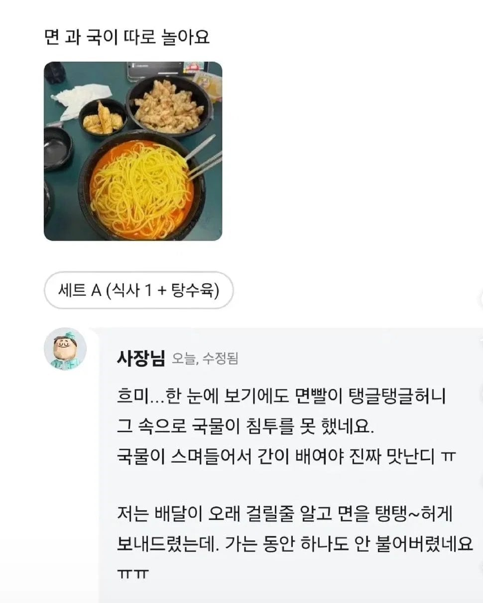
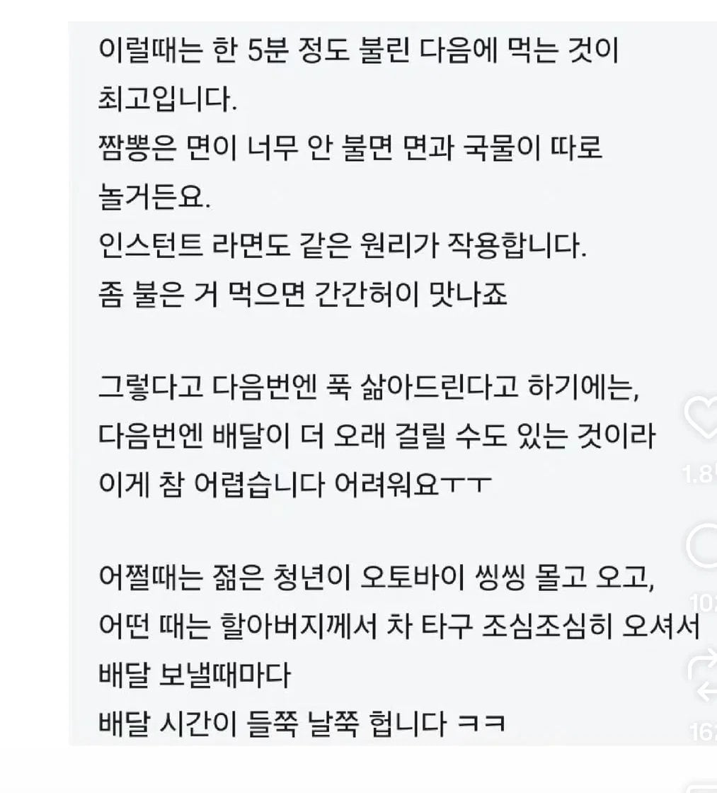
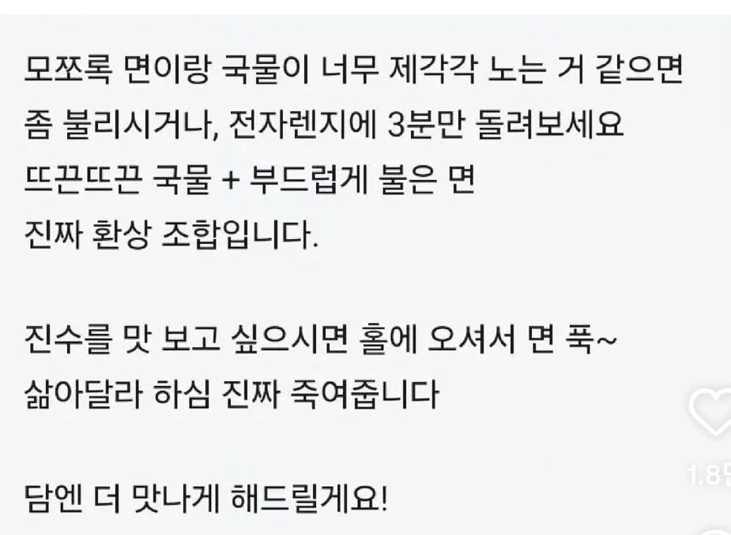

영업 잘하시네 ㅋㅋㅋ
중식은 근데 레알 배달이랑 홀 맛차이가 넘사임..배달시간이 워낙 들쑥날쑥해서..
홀에서 와 존맛 하고 집에서 시켰더니 뭐지? 싶을때도 있고 반대인경우도 드물지않음 ㅇㅇ
근데 배달이 존나 맛있는데 홀이 맛없는 집도 종종있음
엥 그럴수가있나 ㅋㅋㅋ 홀 한창바쁠때 막 나오는 음식이랑 배달되면서 적당히 간도 배고 더 익혀져서 맛있는건가 ㅋㅋ
사장님 실력이 100점이라고 가정할 때
안바쁜시간 100점
점심시간 주문이 많을 때 80점
배달시킬때 70점
이라고 어디서 본 거 같음
아마도 방문시점의 차이일듯
짜장, 짬뽕은 들통에 대량으로 만들어둔다니까
식사시간대에 일찍 방문할수록 갓만든 맛일거
그때는 주방 직원? 주방장?이 다를 수도 있음
주방 직원 무슨 용병단처럼 여러군데 돌면서 출근하는 경우 있더라
자주 가는 곳이 있는데 여느 때처럼 홀 가서 먹는 중에 맛이 평소랑 다르길래 사장님한테 물어보니까 땜빵으로 용병 불렀다구 함
나이스 대처
저러면 진상빼고는 납득하지
사장님의 저런 여유있는 바이브랑 응대 실력보니까 맛집같음 ㅋㅋ 무조건 재주문해봄
저런 집이면 직접 찾아가서 먹어보고 싶다
1. 문제의 원인
2. 문제의 해결방안
3. 실제로 증명 가능하다는 자신감
이 내용으로 PPT를 만들어줄까? 말만해
저러면 나도 일단 홀 가볼꺼 같음
굿
노마진?
짬뽕전문점이신가보네 배달전문점이아니라
절대안시킬듯
나는 오히려 저게 더 취향이라 탱탱하면 좋더라 이상하게 면에서 나는 밀가루냄새인가? 그게 좋음 ㅋㅋ
이제 국물이 다쫄았어요 사장님
멋있다 아재 맘에듬
자연스럽게 한번 더 시켜먹게 유도하는 영업스킬보소 ㅋㅋ
이런게 진짜 장사잘하는 거 같다
저러면 무조건 다시 시켜본다
ㅇㅎ 전자렌지돌려야하는구너
잘하네